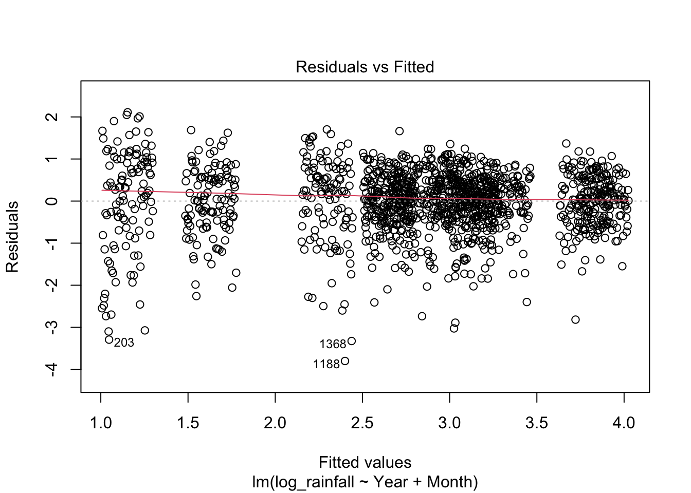
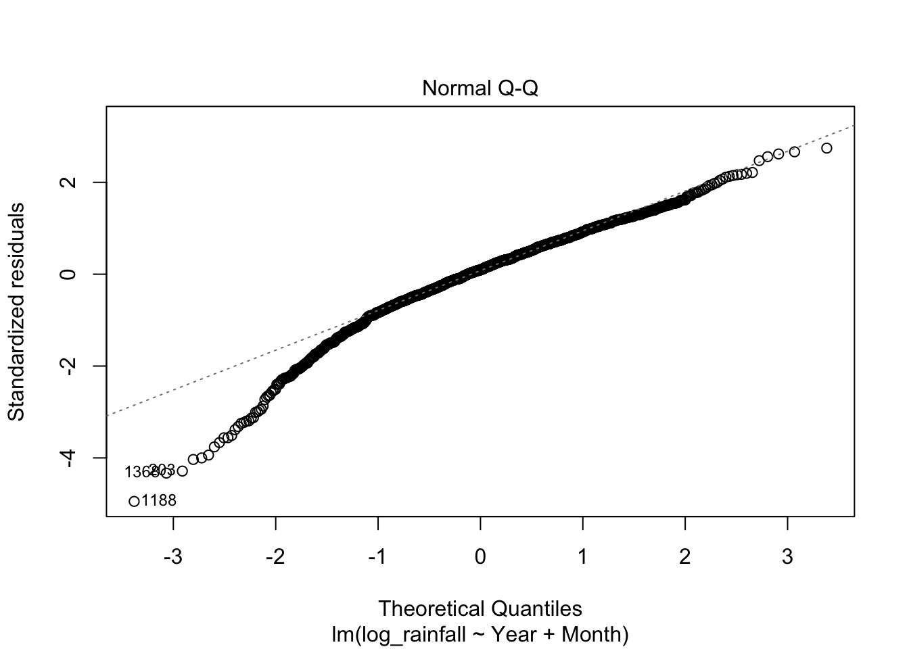
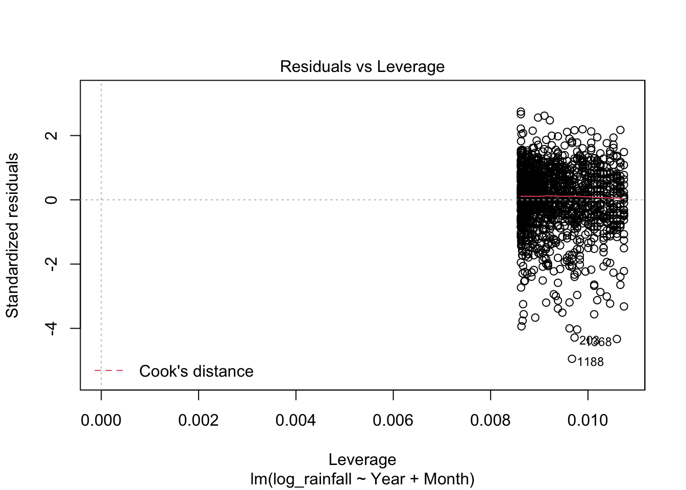
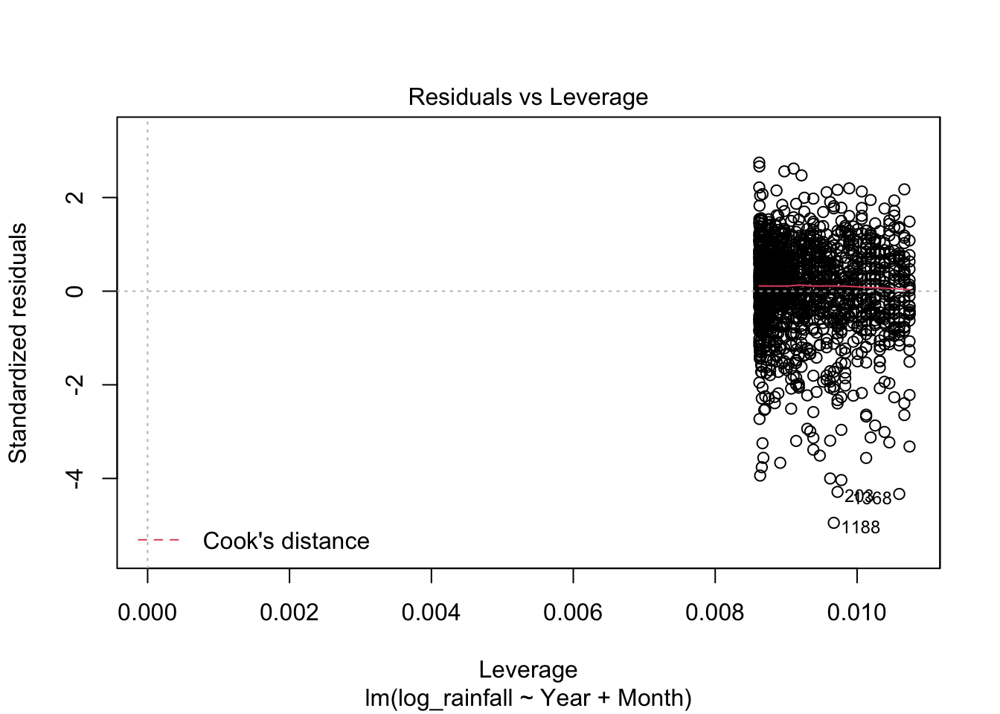

ANTH333 Media Presentation
Rica Rebusit
5/7/2023
Introduction
This Anthropology course from Chico State is about how societies deal with, create, and understand environmental problems. We talk about the relationship between different cultures around the world and the nature around us form and affect our Earth’s environment. A big emphasis is about Jared Diamond’s 5 factors of collapse which he believes “...environmental damage, climate change, hostile neighbors, and friendly trade partners, [and] the society’s responses to its environmental problems—always proves significant” in a society’s collapse. If you want to take a look at his book, click the link: Collapse How Societies Choose to Fail or Succeed
In this media presentation, we will mostly focus on the climate change part of Diamond’s 5 factors of collapse in Pakistan. I want to investigate and find solutions to Pakistan’s problem with heavy rainfall.
Climate Change
Climate change is a change in the usual weather experienced in a place. For example, deforestation can cause climate change where when trees are cut down and burned or simply allowed to rot, carbon is released into the air as carbon dioxide therefore increasing the earths temperature.
Image of deforestation from Los Angeles Times
Examples such as deforestation can cause a chain reaction of collapse where deforestation is environmental damage, which causes climate change, and can lead to hostile neighbors and lost of friendly neighbors where the society does not know how to react to fix these problems.
Pakistan and Climate Change
Image of Pakistan from Nations Online Project
Home of 231 million people, Pakistan is located in Southern Asia. Along the coast of the Arabian Sea, it is hot and dry, and cold up north towards the Himalayas. This contrast of weather is a reason for Pakistan’s climate change and causes monsoons.
People affected from monsoon Image from CNN
Monsoons in Pakistan are so severe and mostly occur during the summer time. Heavy rainfall has many impacts
How they are Affected
During monsoon seasons, people in Pakistan experience
Intense floods
Landslides
Damaged Crops
Damaged Infrastructure
Lives of people taken
Diseases
Tending to the sick, Image from AP News
In 2010, Pakistan endured 12.9 billion dollars of damage caused from monsoons and heavy rainfall.
2 thousand passed away
2 millions homes destroyed
200 thousand livestock lost
12 years later in 2022, Pakistan suffered from 10 billion dollars of damage.
1.2 thousand passed away
300 thousand homes destroyed
700 thousand livestock lost
Livestock struggling in floods, Image from ProPakistani
How to Help Prevent Pakistan’s Climate Change Problems
We can use Data Science, which is “the practice of working with data to generate valuable [knowledge and understanding to] solve real-world problems.” This will provide insight and can help us predict future outcomes. The process of data science involves
Defining the problem
Collecting data
Exploratory data analysis
Modeling
Validate
Communicate results
Application
What is the problem? Can we predict the amount of future rainfall for Pakistan?
Now we collect data. We will use this data set from kaggle: Rainfall in Pakistan
This data set has an accumulation of 116 years of recorded rainfall from 1901 to 2016
Let’s perform some brief exploratory data analysis and if you want to check out the full process, click this link: Pakistan Rainfall Code
We can take a look at the histogram of the rainfall
Histogram
We can also take a look at the average amount of rainfall during these years and months
Average
Once we have performed exploratory data analysis, we can select a model to visualize how to predict rainfall. To keep it simple, we can use a linear regression model which “...is a supervised learning algorithm that compares input (X) and output (Y) variables based on labeled data [which is] used for finding the relationship between the two variables and predicting future results based on past relationships.”
summary(lm2)##
## Call:
## lm(formula = log_rainfall ~ Year + Month, data = pakistan)
##
## Residuals:
## Min 1Q Median 3Q Max
## -3.8009 -0.3886 0.0746 0.5090 2.1102
##
## Coefficients:
## Estimate Std. Error t value Pr(>|t|)
## (Intercept) -1.848127 1.212448 -1.524 0.12766
## Year 0.002533 0.000618 4.099 4.38e-05 ***
## MonthAugust 0.662618 0.101376 6.536 8.86e-11 ***
## MonthDecember -0.816166 0.101376 -8.051 1.76e-15 ***
## MonthFebruary 0.022821 0.101376 0.225 0.82193
## MonthJanuary -0.100026 0.101376 -0.987 0.32397
## MonthJuly 0.766003 0.101376 7.556 7.54e-14 ***
## MonthJune -0.457655 0.101376 -4.514 6.89e-06 ***
## MonthMarch 0.203421 0.101376 2.007 0.04499 *
## MonthMay -0.464082 0.101376 -4.578 5.12e-06 ***
## MonthNovember -1.961016 0.101376 -19.344 < 2e-16 ***
## MonthOctober -1.483168 0.101376 -14.630 < 2e-16 ***
## MonthSeptember -0.295909 0.101376 -2.919 0.00357 **
## ---
## Signif. codes: 0 '***' 0.001 '**' 0.01 '*' 0.05 '.' 0.1 ' ' 1
##
## Residual standard error: 0.7721 on 1379 degrees of freedom
## Multiple R-squared: 0.5007, Adjusted R-squared: 0.4963
## F-statistic: 115.2 on 12 and 1379 DF, p-value: < 2.2e-16Here, we created a linear regression model and saved it under an object called lm2. You can look at the summary of the model and see which is statistically significant indicated by the stars using summary()
We can also validate the model
plot(lm2) 

By validating the model, we can see if it is accurate or not. From the plots, it tells us this model is not very accurate, however we will just go along with it and assume it is.
Now we can predict. Since the most recent year of recorded rainfall for this data set is 2016, let’s predict the rainfall of January 2017
logged_prediction2 <- predict(lm2, data.frame(Year = 2017, Month = "January"))
lm2_prediction <- exp(logged_prediction2)
lm2_prediction## 1
## 23.61064Our model predicted 23 mm of rainfall for January 2017. Let’s see if it is somewhat accurate to real records
Rainfall from January 2017, recorded by National Centers for Environmental Information
As expected, the model overshot by a little bit, but many factors include, how a data scientist approaches the problem, the type of data they use, and how much data is used. Ideally we would want more than 116 years of records to predict that way it would be more accurate.
What Could Have Been Two Other Factors of Collapse
Pakistan could have experienced two other factors of collapse: loss of friendly neighbors and how the society responds. Luckily, they have donations from the United Nations to help with the people affected by health conditions caused by the monsoons.
UNICEF, Image from Diplomatic News Agency
Pakistan’s government also have contributed to the donations as well.
Conclusion
Pakistan goes through the climate change factor of collapse, they go through heavy rainfall and floods affecting the country and the people who live there negatively. Data science can be a tool to help Pakistan prevent these damages caused by climate change. The government can use the predictions to take action early if needed. Luckily, Pakistan has been getting the help they need through many donations.